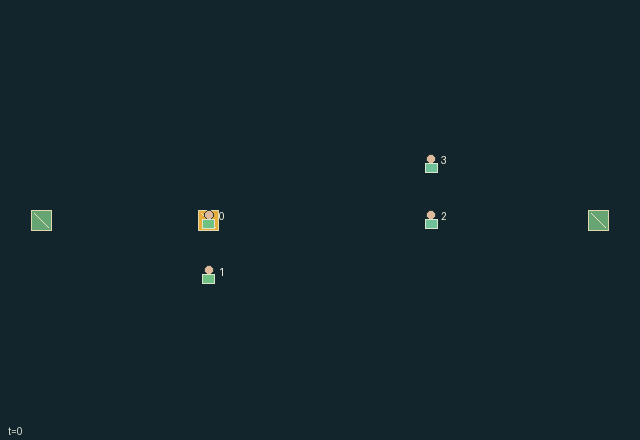

GI173 · Relay Arena

Pairs 0/1 and 2/3 attack right and left goals using controlled carrying, directional passing, receiving, interception and screening.
Identity and original contract
4 independently actionable roles; 11 discrete commands per role; 66 native observation columns per role; original horizon 80 steps. Declared per-step reward range: -10 to 10. Observation regime: fully_observable.
Source SHA-256: fd343e7d228d41dfd595cd135f86e7b9925e5a8c2dc08dd5b3d075f73e5c52cb
The objective, rewards, population, map and horizon remain original. A preview is not a success claim.
Objective and gameplay
Pairs 0/1 and 2/3 attack right and left goals using controlled carrying, directional passing, receiving, interception and screening.
Carrying doubles movement energy. Passing requires teammate positioning and explicit catch; opponents can intercept or tackle. Screens alter enemy movement and protect a nearby carrier.
- Teams 0/1 and 2/3 compete on an 11 by 7 grid; team 0 attacks x=10 and team 1 x=0, at y=2,3,4.
- Entering old occupied player cells, swaps, contested destinations and player co-location are forbidden.
- Carrier walking costs two energy, free walking one. Catch costs one; pass and screen two. Rest restores two up to eight.
- Special actions require zero cooldown and start two ticks of cooldown. A directional pass travels one cell immediately and at most four cells total.
- Screens/movement precede tackles, passes, flight, catches and goals. Closest claimant wins; rotating role order breaks ties.
- A goal pays ten to scoring teammates and minus ten to opponents. Nonterminal kickoffs preserve clock, score, energy and cooldown.
Ending: First team to two goals; otherwise horizon 80. Winning goals have natural priority. Horizon goals do not place a kickoff.
What this game explores
Joint transport & shared access: Positions, load geometry, occupancy and persistent access constrain whose action can succeed next. Distinguish physical handoff, shared controls and simultaneous force from a cosmetic cooperation label.
Team opposition & interception: Cooperation within a team can coexist with opposition between teams. Preserve team membership, capture and possession rules, and report each team's outcomes instead of assuming a single shared return.
These are questions supported by rule structure, not observed learning effects.
Play it: operating walkthrough
crucibles play --game gi173Keep Python running and open its printed address. Select this game, set a seed and press Create session. The game itself is always English.
Assign a role range to Host with Assign / take over, or Assign all roles. Invite a second participant with Create player invitation, then assign a disjoint subset. Every original role is available.
For every owned role choose a legal command and press Queue. Arrow keys / WASD queue a declared directional action for the current role camera when available. Space or Advance one joint step advances everyone together. Non-directional games use the selectors.
Unqueued roles use the labelled untrained uniform-legal policy. Take over or release roles before the next step without resetting. Full-state debug is privileged and permanently logged; role cameras preserve permissions. Close the session to retain logs. Server restart does not restore sessions.
Complete command reference
IDs and English labels exactly match the manifest. Availability depends on role, resources, location and phase. An available action can still have no productive effect.
0·Rest: regain two energy
1·Move north
2·Move east
3·Move south
4·Move west
5·Receive loose ball or tackle opposing carrier within one cell
6·Carrier passes north
7·Carrier passes east
8·Carrier passes south
9·Carrier passes west
10·Screen: protect nearby carrier teammate and block nearby enemy movement
Roles and capability identifiers
These original role names describe capabilities, not interchangeable skins. Check each owned role's legal selector before planning handoffs.
agent_0·Team 0 player 0 attacks right
agent_1·Team 0 player 1 attacks right
agent_2·Team 1 player 2 attacks left
agent_3·Team 1 player 3 attacks left
Information and observation permissions
All positions, teams, energy, cooldowns, ball state, goals and events are public. Own identity is additional. No automatic teammate or receiver is provided.
The GIF is full-state debug and may reveal hidden entities or private state. Train on obs[agent], not the picture, state tree or another role's private row. Field slices and visibility are in the original manifest.
Reinforcement-learning integration
import jax
from crucibles_jaxmarl import make
env = make("gi173")
key = jax.random.PRNGKey(0)
key, rk, ak, sk = jax.random.split(key, 4)
obs, state = jax.jit(env.reset)(rk)
actions = env.sample_actions(ak, state)
obs, state, rewards, dones, info = jax.jit(env.step_env)(sk, state, actions)
done = dones["__all__"]Observations are float32 vectors of width 66; actions are scalar int32; masks have 11 entries. Supply all 4 roles each transition. Masked sampling is an engineering reference, not a trained learner.
step_env retains terminal data without reset. step performs outer autoreset and keeps terminal data in info["raw_state"] and info["raw_observation"]. Use dones["__all__"] for episode boundaries; separate completion, failure and time limit in analysis.
JIT or vmap equal identities and shapes. Split independent reset, policy and transition keys. Group different shapes explicitly; do not shrink the population or horizon. Host rendering stays outside training.
Training questions and fair evaluation
Define valid completion from the objective before fitting. Preserve original rewards and also report real deliveries/services, losses, resource state, unresolved episodes and per-role returns. Animation is not a reward signal.
Positions, load geometry, occupancy and persistent access constrain whose action can succeed next. Distinguish physical handoff, shared controls and simultaneous force from a cosmetic cooperation label.
Cooperation within a team can coexist with opposition between teams. Preserve team membership, capture and possession rules, and report each team's outcomes instead of assuming a single shared return.
Compare memory, communication or centralized critics under matched actor information. Declare critic access; keep actor inputs role-filtered. Match partner/opponent distributions, masks, compute and checkpoint selection. Final tests never enter fitting or selection.
Independent training runs or source-pairing blocks are inferential units; episodes from one policy are not independent training replications. Save hashes, keys, versions, device, time and cost. Negative, zero, failed and indeterminate outcomes are valid. No trained checkpoint or target score is supplied.
Classification and evidence
Overlapping editorial labels are reading aids, not proof of novelty, difficulty, strategic equivalence or learning effects.
- Joint transport & shared access
- Evidence
manifest.task.objective: Pairs 0/1 and 2/3 attack right and left goals using controlled carrying, directional passing, receiving, interception and screening.
- Evidence
manifest.task.interaction: Carrying doubles movement energy. Passing requires teammate positioning and explicit catch; opponents can intercept or tackle. Screens alter enemy movement and protect a nearby carrier.
- Evidence
manifest.actions.5: Receive loose ball or tackle opposing carrier within one cell
- Team opposition & interception
- Evidence
manifest.task.objective: Pairs 0/1 and 2/3 attack right and left goals using controlled carrying, directional passing, receiving, interception and screening.
- Evidence
manifest.task.interaction: Carrying doubles movement energy. Passing requires teammate positioning and explicit catch; opponents can intercept or tackle. Screens alter enemy movement and protect a nearby carrier.
- Evidence
manifest.task.observation_access: All positions, teams, energy, cooldowns, ball state, goals and events are public. Own identity is additional. No automatic teammate or receiver is provided.
Source, receipts and preview limits
The world-only English GIF replays saved untrained legal actions through the original kernel. At most 25 actual endpoints include initial and terminal state; no invented interpolation. It is full-state debug, not the role observation.
Original source, observation slices, manifest and mechanism
Native receipt · Presentation receipt
Engineering passes do not establish learning. Nonzero floating differences remain recorded and undetermined; no new tolerance was introduced. Human scores remain unverified.